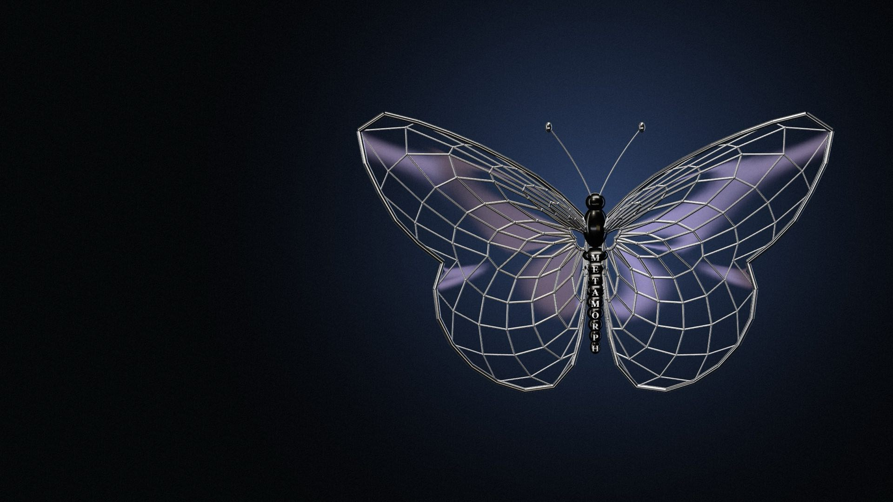
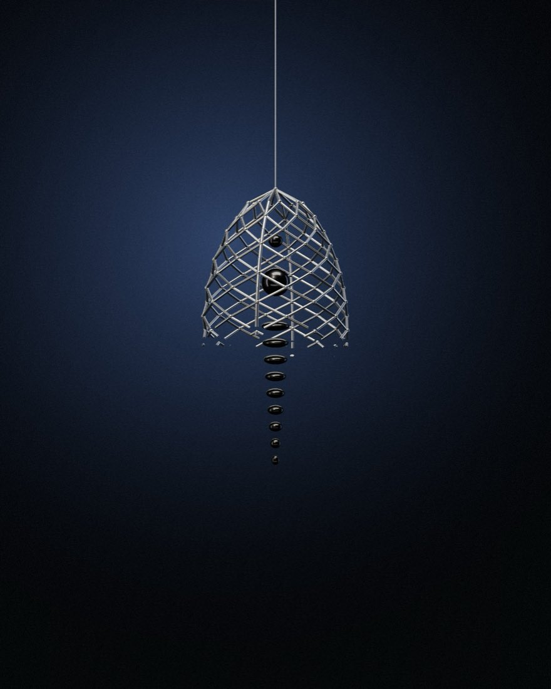
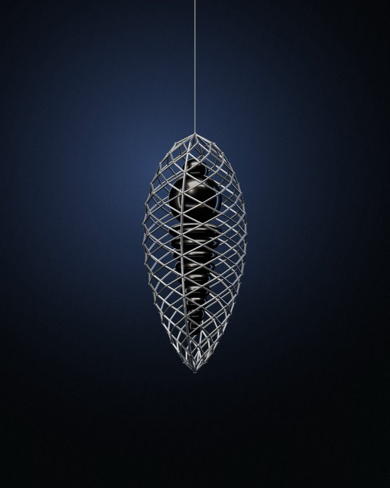
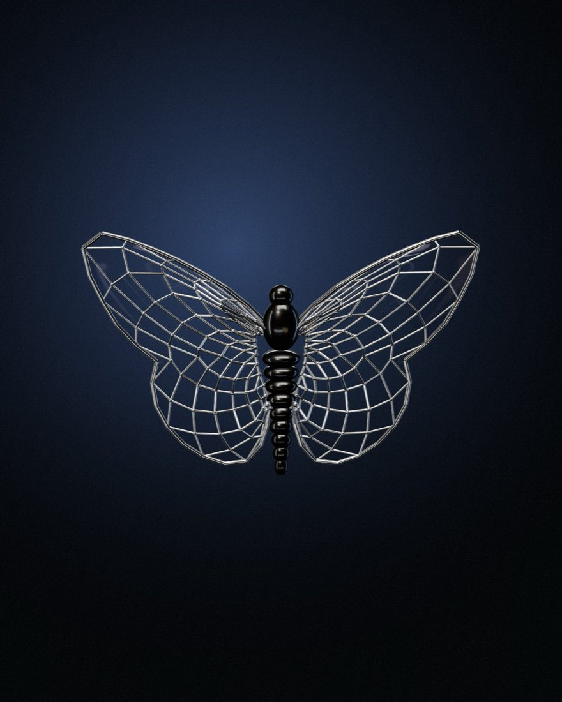
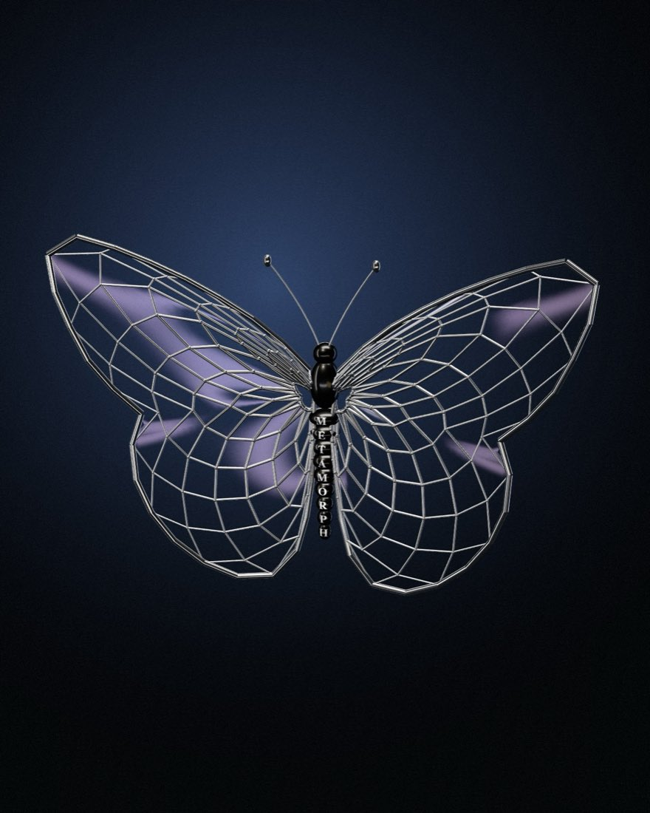
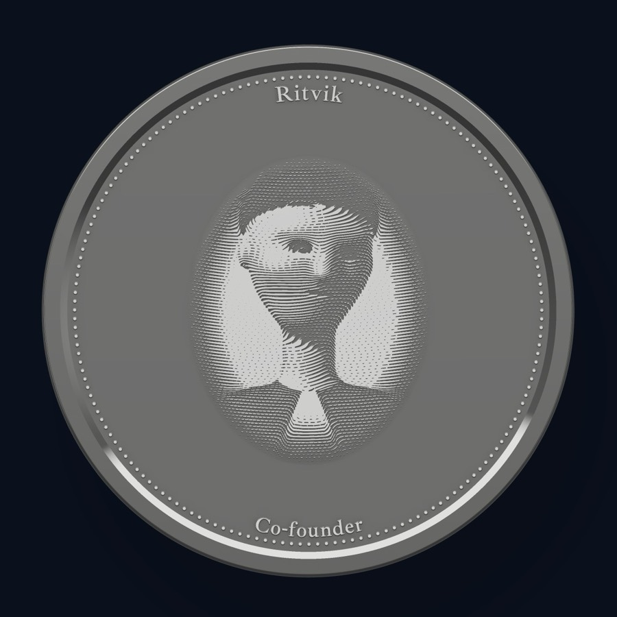
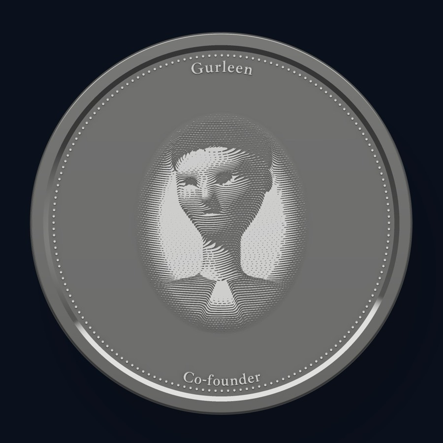

Metamorph
Mother map, rearranged. The same nine letters, in a new form.Investment banking and advisory
A metamorph is a living thing that has gone through a complete change. We work with driven, hungry founders in the middle of theirs.

01 Our vision
Easier to generate wealth than to maintain it.
Capital, debt and taxes have stayed with people since time immemorial. Wars have been won, families broken, rebellions raised and societies structured by how these three were handled.
Money can look like the dullest thing there is, changing hands for no purpose but more money. Go deeper, into the international network of money, how it is structured, how it moves human psychology and behaviour, and how its rightful deployment compounds into wealth that can last for generations, and it becomes a calling.
Money is also a double-edged sword. It brings out greed, theft and treachery, and everyone wishes to be rich. We agree wealth is important and necessary in life, and we despise the relentless, unhinged chase for it.
One of the factors of wealth is society and its teachings, sanskaar. Our parents’ generation was mostly not born with even basic wealth, yet they built it as the economy opened up opportunities for its people.
A firm’s aims come from the goals of the people who run it. When earning, spending, investing and saving are decided with clarity and a right conscience, working with driven, venture-loving, enterprising founders follows. Wherever there is growth, ambition, professionalism and a right conscience, we are there to make it happen, as a premium service: aiming for volume would defeat the purpose of serving ambitious, metamorphic, non-greedy owners.
02 What we do
Four stages of one change.

Spun
01
Fundraising and investor readiness
We raise capital, and make you ready for it first: a model that holds up under questions, a data room with nothing missing, a story spun thread by thread.

The cocoon
02
Strategic consulting
We sharpen strategy for founders growing faster than their plans: the few decisions made inside, before the change shows.

The change
03
Financial services
We keep the numbers honest while everything changes: accounts, tax, compliance, and a structure that still makes sense at ten times the size.

Flight
04
Wealth management
We help wealth last, through a multi-family office for founders and their families, planned for the generation after this one.
03 In a deal
We create it, negotiate it and close it.
Deal creator
Investors follow honest intent, promoter clarity and fiscal discipline. We weave the three together for the company, and bring capital together with expertise from our investor network.
Deal negotiator
There are thousands of investors and financiers, each with their own thesis and risk-return profile. Negotiating the best deal with the right investor brings the precision quality business building needs.
Deal closer
End to end: every piece of preparation, presenting the case to investors in our network, and finalising the deal that is best for the company and the investor.
30years of signed accounts
04 The practice behind us
The mechanics of finance, backed by thirty years.
Behind every number we give you is a practising chartered accountancy firm, thirty years old. Metamorph grew out of it: three decades of audits, tax and balance sheets for Indian businesses, the exact work that shows what a company is really worth.
05 Values we uphold
- Greed-less conscience.Saying no when the fee is the only reason to say yes.
- In-depth evaluation.Reading the business, not the deck: the books before the pitch.
06 Who we are
- Before starting anything, the first questionWhat value can we add that no one else brings?
- The secondDoes it pull at us, with a sense of calling?
Metamorph was founded by Ritvik and Gurleen, who ask both before they begin anything. Their own reasons for starting it are theirs to tell, and will be here in their words. Meet the whole team

